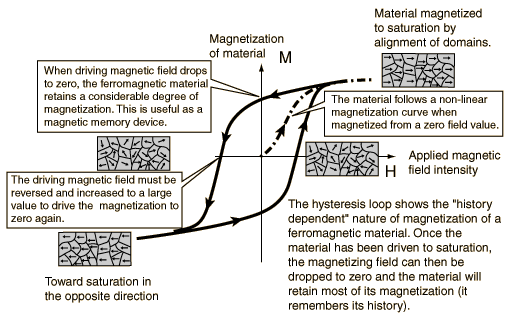

Hysteresis is a fancy word for a simple idea.
Wikipedia says: Hysteresis is the dependence of the state of a system on its history.
But you can just say: Hysteresis is when a system has slack.
In this one, the output pin of the slider is rigidly connected to the input pin.
Try dragging the input pin.
In this one, the output pin of the slider is connected to the input pin, but it's not a rigid connection: there's slack.
Try dragging the input pin.
These charts show the way that the input pin (x) determines the output pin (y). But they look very different.
The first plot is a simple curve. Every vertical line hits only one point, which means that the position of the output pin is a function of the position of the input pin. Knowing where the input pin is, at some instant of time, is all you need to know to determine exactly where the output pin is.
But the second plot is made out of loops. At a fixed x-position (corresponding to a fixed input-pin position), there are multiple possible y-positions (corresponding to multiple output-pin positions). If you want to know where the output pin is at some instant of time, knowing the input pin's location is not enough.
When a system has slack, the current input doesn't directly determine the current output. That's all that hysteresis is.
A lot of other things in the world work the same way as these sliders, even if they don't look the same at first glance. Here's one metaphor I like: Suppose the track is a happiness scale. The location of the input pin represents the external circumstances of your life. The output pin measures your internal mood.
The slackless system, on the left, models a world where your mood depends directly on what's going around you at every instant. How happy are you right now? We can find out by looking at what's going on in your life, and computing from that data alone.
The system with slack, on the right, models a world where external circumstances push your mood around, but don't directly determine it. If the external situation is much better or worse than your present mood calls for, your mood will shift to stay within range, but your mood generally just tries to stay put. There's some kind of inertia at work.
Which of these models do you think better describes the dynamics of your moods? Do either of them even come close? What other phenomena are these systems missing, which would help them represent your emotional life?
It feels right to say that, when your system has slack, the output just isn't determined by the input at all. But the Wikipedia definition at the top says something different. It says something about the output being determined by "history".
So let's give the computer some "history" to play with.
Click & drag to define the path of the input pin over time. Hover to see the future trajectory of the output pin from the point you've selected. The shaded region shows the region where the output pin could possibly end up, given the movement of the input pin.
Experiment a bit. How does the trajectory of the input pin affect the possible trajectories of the output pin? When is the trajectory of the input pin enough to determine where the output pin ends up?
I think there are two ways the input pin can be said to completely determine the output pin, despite our earlier sense that they were not so tightly bound together:
First of all, if you know where the output pin was at one moment in time, and you know how the input pin moved since then, you can figure out how the output pin will move. That's the reason why we can draw the future trajectory of the output pin (given a starting point) as a curve, rather than a shaded region.
One way to put it — the slider has a memory (the position of the output pin), which has its own existence, independent of the input. But the way this memory changes over time is determined by the input.
But also, once the input pin moves back and forth enough, it doesn't matter where it started. The shaded region of possibility funnels down to a single curve.
So, if the external forces are strong enough, the slider's memory is overwhelmed. It doesn't matter where the memory started out — enough has happened input-wise since then that the memory is irrelevant.
Chains have slack, and moods have memories. But many systems in the natural world exhibit hysteresis, without looking obviously like they should have slack or memory. For instance: If you take a piece of metal, and expose it to a magnetic field H (by charging up an electromagnet next to it, or just bringing a powerful magnet nearby), the natural mini-magnets of the metal will align with the field, giving the metal a magnetization M it didn't have before. But then, if you turn off the outside field, the mini-magnets will stay aligned, so M will stick around even without H.
It's like H is the input pin and M is the output pin in some weird slider system.
So the dark loop in the center of this diagram (from HyperPhysics) should look familiar:
